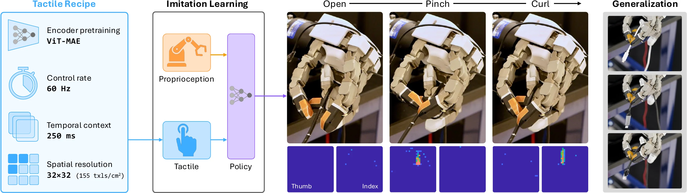
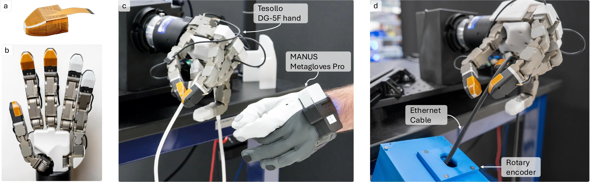
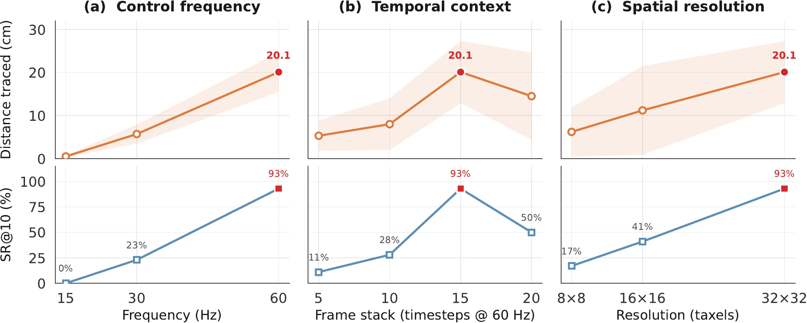
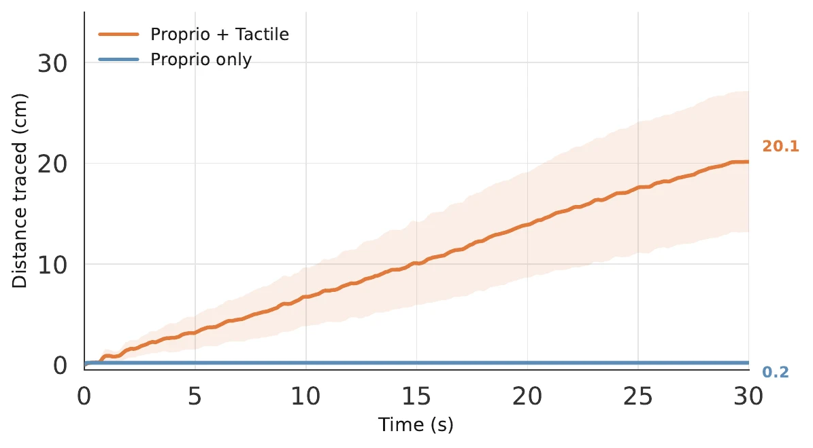
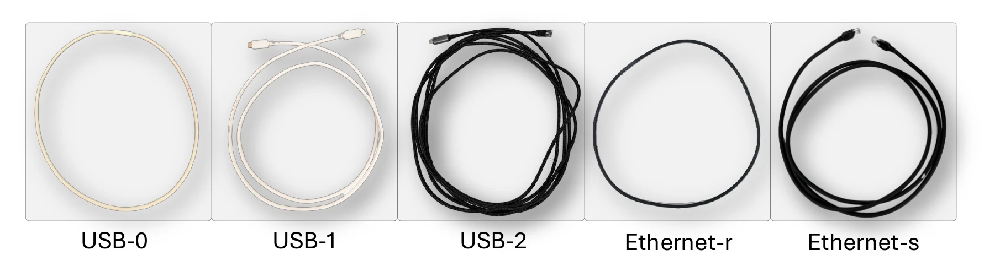

Tactile sensing
Custom TacV5 arrays provide dense 32 × 32 pressure maps on the thumb and index finger at 240 Hz.
Dexterous AI Group, Analog Devices, Inc.
Graphical Abstract

Dexterous manipulation of deformable objects demands continuous fingertip-level regulation of pressure, friction, and incipient slip. We study one of the most challenging cases: dexterous cable tracing, feeding a cable through the hand with repeated pinch-and-curl motions of the thumb and index finger.
We introduce Touch2Trace, a tactile-driven imitation-learning system for this task, and provide, to our knowledge, the first systematic real-world characterization of how encoder pretraining, control rate, temporal context, and spatial resolution each shape policy performance. The winning learning recipe combines a tactile encoder pretrained for a custom 32 × 32 piezoresistive sensor (TacV5) via self-supervised learning with a lightweight transformer policy trained on teleoperated demonstrations via behavior cloning, deployed at 60 Hz on a Tesollo DG-5F hand.
Tactile feedback without vision or explicit cable-state estimation significantly improves tracing performance versus a proprioception-only baseline: from 0.2 cm to 20.1 cm mean distance and 0% to 93% success rate, with zero-shot transfer to unseen cables and routing conditions. The results quantify the influence of key parameters in tactile-driven systems for reliable dexterous deformable object manipulation.
A narrated overview of the system, learning architecture, experiments, and autonomous cable-tracing results.
A tactile-equipped dexterous hand, an efficient teleoperation pipeline, and perception-independent measurement form the real-world learning platform.
Custom TacV5 arrays provide dense 32 × 32 pressure maps on the thumb and index finger at 240 Hz.
Twelve glove-teleoperated trajectories—10.1 minutes in total—capture repeated open, pinch, and curl motions.
A mechanical rotary encoder measures cable displacement without exposing cable state to the learned policy.

A frozen tactile representation feeds a compact temporal policy that maps contact history directly to eight joint targets.
Signals flow from tactile and proprioceptive history through the policy and back around the 60 Hz control loop.Swipe horizontally on smaller screens.
Learning Recipe
The tactile encoder is pretrained on diverse contact data and frozen. Only the lightweight behavior-cloning policy is optimized on cable-tracing demonstrations.
Results
Dense tactile feedback enables stable pinch-and-curl tracing, smooth closed-loop control, and transfer to unseen cable materials and routings.
On unseen Ethernet cable in straight routing.
On unseen Ethernet cable in straight routing, compared with 0% using proprioception alone.
Action smoothness of 0.004 versus 0.011 for the matched proprioception-only baseline.
The measured sense-to-act path is at most 11.8 ms, within the 16.7 ms control period.
Core Experiment · Tactile-Property Characterization
On this hardware and task, controlled ablations show substantial performance losses when control frequency, temporal context, or tactile spatial resolution is reduced.

Tactile Necessity
Joint positions contain no direct information about cable contact, pressure distribution, or slip. The tactile policy advances steadily throughout the rollout, while the proprioception-only policy stalls near its starting point.


Generalization
The learned policy transfers across cable material, diameter, and routing. Even the hardest thin-cable condition reaches 10.4 cm on average without retraining.
| Cable | Routing | Distance (cm) | SR@10 | SR@20 |
|---|---|---|---|---|
| USB-0 train | Ring | 25.5 ± 7.2 | 96% | 73% |
| USB-1 | Straight | 17.8 ± 8.1 | 73% | 38% |
| USB-2 | Straight | 10.4 ± 4.9 | 47% | 13% |
| Ethernet | Straight | 20.1 ± 4.6 | 93% | 57% |
| Ethernet | Ring | 24.7 ± 7.2 | 97% | 73% |
Reference
Touch2Trace: Tactile-Driven Imitation Learning for Dexterous Cable Tracing
@misc{grimaldi2026touch2trace,
title = {Touch2Trace: Tactile-Driven Imitation Learning
for Dexterous Cable Tracing},
author = {Matteo Grimaldi and David Klee and Ziling Chen
and Tong Jian and Wonju Lee and Wenjie Lu
and Tao Yu and Saleh Nabi},
year = {2026},
eprint = {2609.15921},
archivePrefix = {arXiv},
primaryClass = {cs.RO},
url = {https://arxiv.org/abs/2609.15921}
}